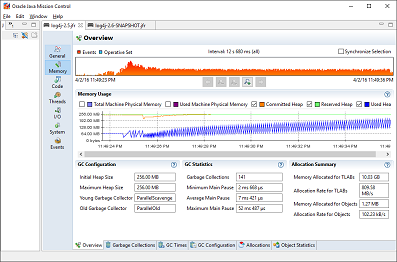
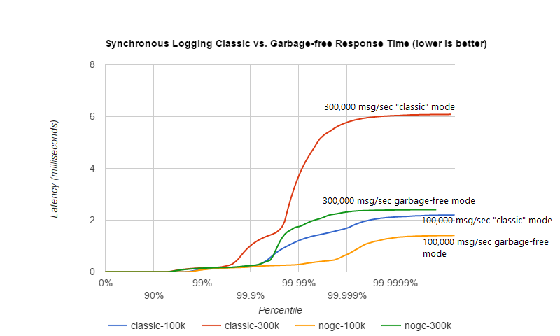

Garbage-free Steady State Logging
Garbage collection pauses are a common cause of latency spikes and for many systems significant effort is spent on controlling these pauses.
Many logging libraries, including previous versions of Log4j, allocate temporary objects like log event objects, Strings, char arrays, byte arrays and more during steady state logging. This contributes to pressure on the garbage collector and increases the frequency with which GC pauses occur.
From version 2.6, Log4j runs in "garbage free" mode by default where objects and buffers are reused and no temporary objects are allocated as much as possible. There is also a "low garbage" mode which is not completely garbage free but does not use ThreadLocal fields. This is the default mode when Log4j detects it is running in a web application. Finally, it is possible to switch off all garbage-free logic and run in "classic mode" instead. For details, see the Configuration section below.
A Contrived Example
To highlight the difference that garbage-free logging can make, we used Java Flight Recorder to measure a simple application that does nothing but log a simple string as often as possible for about 12 seconds.
The application was configured to use Async Loggers, a RandomAccessFile appender and a "%d %p %c{1.} [%t] %m %ex%n" pattern layout. (Async Loggers used the Yield WaitStrategy.)
Mission Control shows that with Log4j 2.5 this application allocates memory at a rate of about 809 MB/sec, resulting in 141 minor collections. Log4j 2.6 does not allocate temporary objects in this configuration, and as a result the same application with Log4j 2.6 has a memory allocation rate of 1.6 MB/sec and was GC-free with 0 (zero) garbage collections.
|
 With Log4j 2.5: memory allocation rate 809 MB/sec, 141 minor collections. |

Log4j 2.6 did not allocate temporary objects: 0 (zero) garbage collections. |
{kind=link}
Configuration
Garbage-free logging in Log4j 2.6 is partially implemented by reusing objects in ThreadLocal fields, and partially by reusing buffers when converting text to bytes.
ThreadLocal fields holding non-JDK classes can cause memory leaks in web applications when the application server's thread pool continues to reference these fields after the web application is undeployed. To avoid causing memory leaks, Log4j will not use these ThreadLocals when it detects that it is used in a web application (when the javax.servlet.Servlet class is in the classpath, or when system property log4j2.isWebapp is set to "true").
Some garbage-reducing functionality does not rely on ThreadLocals and is enabled by default for all applications: in Log4j 2.6, converting log events to text and text to bytes can be done by directly encoding text into a reused ByteBuffer without creating intermediary Strings, char arrays and byte arrays. So while logging is not completely garbage-free for web applications yet, the pressure on the garbage collector can still be significantly reduced.
|
Note 1: as of version 2.6, a Log4j configuration containing a <Properties> section will result in temporary objects being created during steady-state logging. Note 2: the Async Logger Timeout wait strategy (the default) and the Block wait strategy cause java.util.concurrent.locks.AbstractQueuedSynchronizer$Node objects to be created. The Yield and Sleep wait strategies are garbage-free. (See here and here.) |
Disabling Garbage-free Logging
There are two separate system properties for manually controlling the mechanisms Log4j uses to avoid creating temporary objects:
- log4j2.enableThreadlocals - if "true" (the default for non-web applications) objects are stored in ThreadLocal fields and reused, otherwise new objects are created for each log event.
- log4j2.enableDirectEncoders - if "true" (the default) log events are converted to text and this text is converted to bytes without creating temporary objects. Note: synchronous logging performance may be worse for multi-threaded applications in this mode due to synchronization on the shared buffer. If your application is multi-threaded and logging performance is important, consider using Async Loggers.
- The ThreadContext map is not garbage-free by default, but from Log4j 2.7 it can be configured to be garbage-free by setting system property log4j2.garbagefreeThreadContextMap to "true".
Instead of system properties, the above properties can also be specified in a file named log4j2.component.properties by including this file in the classpath of the application. See the manual regarding system properties for more info.
Supported Appenders
The following appenders are garbage-free during steady-state logging:
- Console
- File
- RollingFile (some temporary objects are created during file rollover)
- RandomAccessFile
- RollingRandomAccessFile (some temporary objects are created during file rollover)
- MemoryMappedFile
Any other appenders not in the above list (including AsyncAppender) create temporary objects during steady-state logging. Instead of AsyncAppender, use Async Loggers to log asynchronously in a garbage-free manner.
Supported Filters
The following filters are garbage-free during steady-state logging:
- CompositeFilter (adding and removing element filters creates temporary objects for thread safety)
- DynamicThresholdFilter
- LevelRangeFilter (garbage free since 2.8)
- MapFilter (garbage free since 2.8)
- MarkerFilter (garbage free since 2.8)
- StructuredDataFilter (garbage free since 2.8)
- ThreadContextMapFilter (garbage free since 2.8)
- ThresholdFilter (garbage free since 2.8)
- TimeFilter (garbage free since 2.8 except when range must be recalculated once per day)
Other filters like BurstFilter, RegexFilter and ScriptFilter are not trivial to make garbage free, and there is currently no plan to change them.
Supported Layouts
GelfLayout
GelfLayout is garbage-free when used with compressionType="OFF", as long as no additional field contains '${' (variable substitution).
JsonTemplateLayout
JsonTemplateLayout is garbage-free with a few exceptions.
PatternLayout
PatternLayout with the following limited set of conversion patterns is garbage-free. Format modifiers to control such things as field width, padding, left and right justification will not generate garbage.
| Conversion Pattern | Description | ||||||||||||||||||||||||
|---|---|---|---|---|---|---|---|---|---|---|---|---|---|---|---|---|---|---|---|---|---|---|---|---|---|
| %c{precision}, %logger{precision} | Logger name | ||||||||||||||||||||||||
| %d, %date | Note: Only the predefined date formats are garbage-free: (millisecond separator may be either
a comma ',' or a period '.')
|
||||||||||||||||||||||||
| %enc{pattern}, %encode{pattern} | Encodes special characters such as '\n' and HTML characters to help prevent log forging and some XSS attacks that could occur when displaying logs in a web browser - garbage-free since 2.8 | ||||||||||||||||||||||||
| %equals{pattern}{test}{substitution}, %equalsIgnoreCase{pattern}{test}{substitution} | Replaces occurrences of 'test', a string, with its replacement 'substitution' in the string resulting from evaluation of the pattern - garbage-free since 2.8 | ||||||||||||||||||||||||
| %highlight{pattern}{style} | Adds ANSI colors - garbage-free since 2.7 (unless nested pattern is not garbage free) | ||||||||||||||||||||||||
| K{key}, map{key}, MAP{key} | Outputs the entries in a MapMessage, if one is present in the event - garbage-free since 2.8. | ||||||||||||||||||||||||
| %m, %msg, %message | Log message (garbage-free unless message text contains '${') | ||||||||||||||||||||||||
| %marker | The full name of the marker (including parents) - garbage-free since 2.8 | ||||||||||||||||||||||||
| %markerSimpleName | The simple name of the marker (not including parents) | ||||||||||||||||||||||||
| %maxLen, %maxLength | Truncates another pattern to some max number of characters - garbage-free since 2.8 | ||||||||||||||||||||||||
| %n | The platform dependent line separator | ||||||||||||||||||||||||
| %N, %nano | System.nanoTime() when the event was logged | ||||||||||||||||||||||||
| %notEmpty{pattern}, %varsNotEmpty{pattern}, %variablesNotEmpty{pattern} | Outputs the result of evaluating the pattern if and only if all variables in the pattern are not empty - garbage-free since 2.8 | ||||||||||||||||||||||||
| %p, %level | The level of the logging event | ||||||||||||||||||||||||
| %r, %relative | The number of milliseconds elapsed since the JVM was started until the creation of the logging event - garbage-free since 2.8 | ||||||||||||||||||||||||
| %sn, %sequenceNumber | A sequence number that will be incremented in every event - garbage-free since 2.8 | ||||||||||||||||||||||||
| %style{pattern}{ANSI style} | Style the message - garbage-free since 2.7 (unless nested pattern is not garbage free) | ||||||||||||||||||||||||
| %T, %tid, %threadId | The ID of the thread that generated the logging event | ||||||||||||||||||||||||
| %t, %tn, %thread, %threadName | The name of the thread that generated the logging event | ||||||||||||||||||||||||
| %tp | The priority of the thread that generated the logging event | ||||||||||||||||||||||||
| %X{key[,key2...]}, %mdc{key[,key2...]}, %MDC{key[,key2...]} | Outputs the Thread Context Map (also known as the Mapped Diagnostic Context or MDC) associated with the thread that generated the logging event - garbage-free since 2.8 | ||||||||||||||||||||||||
| literal text | Garbage-free unless literal contains '${' (variable substitution) |
Other PatternLayout conversion patterns, and other Layouts may be updated to avoid creating temporary objects in future releases. (Patches welcome!)
Note: Logging exceptions and stack traces will create temporary objects with any layout. (However, Layouts will only create these temporary objects when an exception actually occurs.) We haven't figured out a way to log exceptions and stack traces without creating temporary objects. That is unfortunate, but you probably still want to log them when they happen.
| Note: patterns containing regular expressions and lookups for property substitution
will result in temporary objects being created during steady-state logging.
Including location information is done by walking the stacktrace of an exception, which creates temporary objects, so the following patterns are not garbage-free:
|
API Changes
Methods have been added to the Logger interface so that no vararg array objects are created when logging messages with up to ten parameters.
Also, methods have been added to the Logger interface to log java.lang.CharSequence messages. User-defined objects that implement the CharSequence interface can be logged without creating temporary objects: Log4j will try to turn CharSequence messages, Object messages and message parameters into text by appending them to a StringBuilder as a CharSequence. This avoids calling toString() on these objects.
An alternative is to implement the org.apache.logging.log4j.util.StringBuilderFormattable interface. If an object is logged that implements this interface, its formatTo method is called instead of toString().
Log4j may call toString() on message and parameter objects when garbage-free logging is disabled (when system property log4j2.enableThreadlocals is set to "false".)
Impact on Application Code: Autoboxing
We made an effort to make logging garbage-free without requiring code changes in existing applications, but there is one area where this was not possible. When logging primitive values (i.e. int, double, boolean, etc.) the JVM autoboxes these primitive values to their Object wrapper equivalents, creating garbage.
Log4j provides an Unbox utility to prevent autoboxing of primitive parameters. This utility contains a thread-local pool of reused StringBuilders. The Unbox.box(primitive) methods write directly into a StringBuilder, and the resulting text will be copied into the final log message text without creating temporary objects.
import static org.apache.logging.log4j.util.Unbox.box;
...
public void garbageFree() {
logger.debug("Prevent primitive autoboxing {} {}", box(10L), box(2.6d));
}
|
Note: not all logging is garbage free. Specifically:
|
Performance
Response Time Latency
Response time is how long it takes to log a message under a certain load. What is often reported as latency is actually service time: how long it took to perform the operation. This hides the fact that a single spike in service time adds queueing delay for many of the subsequent operations. Service time is easy to measure (and often looks good on paper) but is irrelevant for users since it omits the time spent waiting for service. For this reason we report response time: service time plus wait time. See the response time section of the performance page for more detail.
The response time test results below were all derived from running the ResponseTimeTest class which can be found in the Log4j 2 unit test source directory. If you want to run these tests yourself, here are the command line options we used:
- -Xms1G -Xmx1G (prevent heap resizing during the test)
- -DLog4jContextSelector=org.apache.logging.log4j.core.async.AsyncLoggerContextSelector -DAsyncLogger.WaitStrategy=busyspin (to use Async Loggers. The BusySpin wait strategy reduces some jitter.)
- classic mode: -Dlog4j2.enable.threadlocals=false -Dlog4j2.enable.direct.encoders=false
garbage-free mode: -Dlog4j2.enable.threadlocals=true -Dlog4j2.enable.direct.encoders=true - -XX:CompileCommand=dontinline,org.apache.logging.log4j.core.async.perftest.NoOpIdleStrategy::idle
- -verbose:gc -XX:+PrintGCDetails -XX:+PrintGCDateStamps -XX:+PrintTenuringDistribution -XX:+PrintGCApplicationConcurrentTime -XX:+PrintGCApplicationStoppedTime (to eyeball GC and safepoint pauses)
Async Loggers
The graph below compares "classic" logging to garbage-free logging response time behaviour for Log4j's Async Loggers. In the graph, "100k" means logging at a sustained load of 100,000 messages/second, "800k" is a sustained load of 800,000 messages/second.

In classic mode we see numerous minor garbage collections which pause the application threads for 3 milliseconds or more. This quickly adds up to response time delays of almost 10 milliseconds. As you can see in the graph, increasing the load shifts the curve to the left (there are more spikes). This makes sense: logging more means more pressure on the garbage collector resulting in more minor GC pauses. We experimented a little with reducing the load to 50,000 or even 5000 messages/second, but this did not eliminate the 3 millisecond pauses, it just made them occur less frequently. Note that all GC pauses in this test are minor GC pauses. We did not see any full garbage collections.
In garbage-free mode, maximum response time remains well below 1 millisecond under a wide range of loads. (Max 780 us at 800,000 messages/sec, max 407 us at 600,000 messages/sec, with the 99% around 5 us for all loads up to 800,000 messages/sec.) Increasing or decreasing the load does not change the response time behaviour. We did not investigate the cause of the 200-300 microsecond pauses we saw in these tests.
When we increased the load further we begin to see larger response time pauses for both classic and garbage-free logging. At sustained loads of 1 million messages/second or more we start to approach the maximum throughput of the underlying RandomAccessFile Appender (see the synchronous logging throughput chart below). At these loads the ringbuffer starts to fill up and backpressure kicks in: attempting to add another message when the ringbuffer is full will block until a free slot becomes available. We start to see response times of tens of milliseconds or more; and attempting to increase the load even more results in larger and larger response time spikes.
Synchronous File Logging
With synchronous file logging, garbage-free logging still performs better than classic logging, but the difference is less pronounced.
At a workload of 100,000 messages/second, classic logging max response time was a little over 2 milliseconds where garbage-free logging was a little over 1 millisecond. When the workload is increased to 300,000 messages/second, classic logging shows response time pauses of 6 milliseconds where the garbage-free response times were less than 3 milliseconds. It may be possible to improve on this, we did not investigate further yet.

The above results are obtained with the ResponseTimeTest class which can be found in the Log4j 2 unit test source directory, running on JDK 1.8.0_45 on RHEL 6.5 (Linux 2.6.32-573.1.1.el6.x86_64) with 10-core Xeon CPU E5-2660 v3 @2.60GHz with hyperthreading switched on (20 virtual cores).
Classic Logging has Slightly Higher Throughput
Throughput is slightly worse for garbage-free logging, compared to classic logging. This is true for both synchronous and asynchronous logging. The graph below compares the sustained throughput of synchronous logging to a file with Log4j 2.6 in garbage-free mode, classic mode and Log4j 2.5.

The results above are obtained with the JMH Java benchmark harness. See the FileAppenderBenchmark source code in the log4j-perf module.
Under the Hood
Custom Message implementations that implement org.apache.logging.log4j.util.StringBuilderFormattable can be converted to text by garbage-free Layouts without creating temporary objects. PatternLayout uses this mechanism and other layouts that convert LogEvents to text will likely also look for this interface.
Custom Layouts that want to be garbage-free should implement the Encoder<LogEvent> interface. For custom Layouts that convert a LogEvent to a text representation, the org.apache.logging.log4j.core.layout.StringBuilderEncoder class may be useful to convert this text to bytes in a garbage-free manner.
Custom Appenders that want to be garbage-free should provide their Layout with a ByteBufferDestination implementation that the Layout can directly write into.
AbstractOutputStreamAppender has been modified to make the ConsoleAppender, (Rolling)FileAppender, (Rolling)RandomAccessFileAppender and MemoryMappedFileAppender garbage-free. An effort has been made to minimize impact on custom Appenders that extend AbstractOutputStreamAppender, but it is impossible to guarantee that changing the superclass will not impact any and all subclasses. Custom Appenders that extend AbstractOutputStreamAppender should verify that they still function correctly. In case there is a problem, system property log4j2.enable.direct.encoders can be set to "false" to revert to the pre-Log4j 2.6 behaviour.